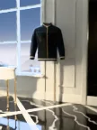
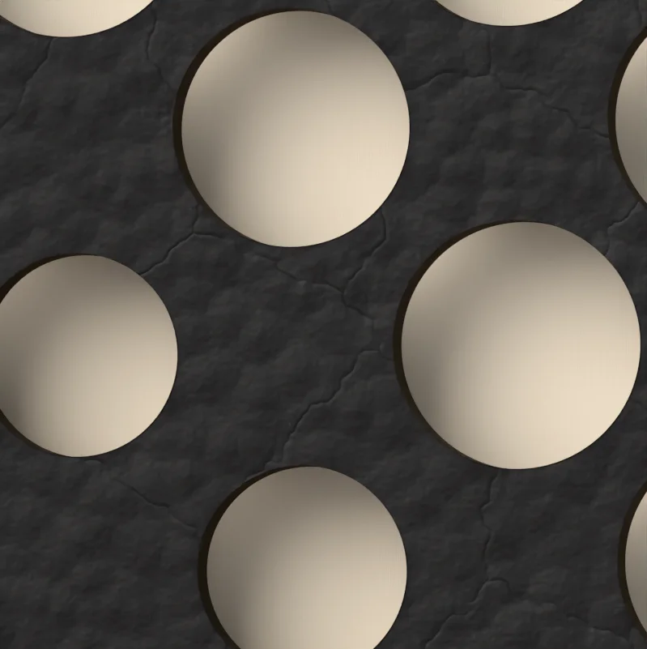
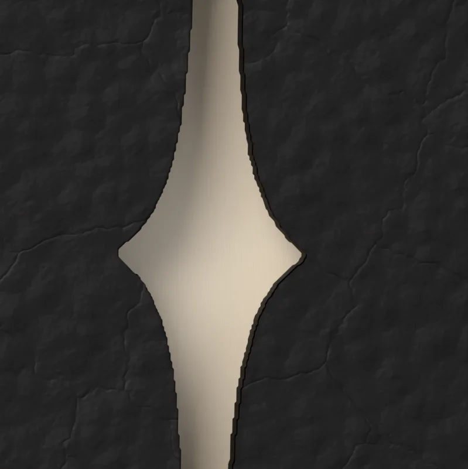
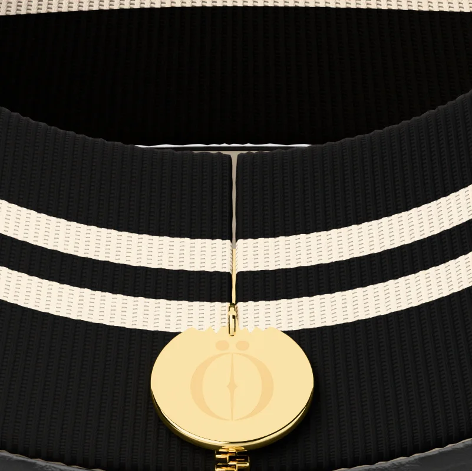

STAND-IN · img/odara/front/master.* (departments/apparel/new-pieces-2026-11/build/muse-bomber/site/muse_bomber_front_16k.png; 16K, 8640 × 15360)
STAND-IN · img/odara/front/master.* (departments/apparel/new-pieces-2026-11/build/muse-bomber/site/muse_bomber_front_16k.png; 16K, 8640 × 15360) STAND-IN · img/odara/three-quarter/master.* (three-quarter view, 8K; 8K, 4320 × 7680)
STAND-IN · img/odara/three-quarter/master.* (three-quarter view, 8K; 8K, 4320 × 7680) STAND-IN · img/odara/back/master.* (back view, 8K; 8K, 4320 × 7680)
STAND-IN · img/odara/back/master.* (back view, 8K; 8K, 4320 × 7680) STAND-IN · img/odara/open/master.* (the open view, 8K, the lining and the kiss, after the satin pass (open8k, 19c6ef39, is a stand-in: its satin is being redone); 8K, 4320 × 7680)
STAND-IN · img/odara/open/master.* (the open view, 8K, the lining and the kiss, after the satin pass (open8k, 19c6ef39, is a stand-in: its satin is being redone); 8K, 4320 × 7680)Where it is going
The suite, at dusk
Two glasses on the sill, one poured.
Chapter I · Outerwear
Ödara
Leather bomber
Scroll to walk around it
Chapter I
Ödara
Leather bomber
Her portrait, drawn in small holes through black lambskin so the cream beneath shows her face. The Ö cut on her cheek, a gold zip with the Ö to close it.
- LEATHER
- BLACK LAMBSKIN
- LINING
- CREAM SILK
- RIB
- KNITTED JACQUARD
- ZIP
- GOLD, THE Ö PULL
- SIZE
- XS · S · M · L · XL
PRICE ON REQUEST
Keep a seatThe register sees the pre-sale first.
Details
- Pre-sale
- Made to order. We email your delivery date once production is confirmed. Cancel for a full refund any time before production starts.
- Returns
- Exchanges within 14 days of delivery, unused and with tags.
- Care
- Wipe with a soft dry cloth. Keep from rain and heat; if it gets wet, let it dry slowly away from a radiator. Store in its dust bag, stuffed with tissue, out of the light. Leather cleaning by a specialist only. Care
- Size
- The measurements

STAND-IN · img/odara/world/master.* (C10: the last frame, the world plate (the suite, at dusk); 8K, 5760 × 7680)Where it is going · C10
The suite, at dusk
Two glasses on the sill, one poured.
On the screen in the film, the picture is tomorrow: each piece in the place it is going, with one place kept for someone.
The filmClose

STAND-IN · img/odara/detail-holes/master.* (the holes and the silk, 8K close-up; 8K, 7680 × 4320)The holes and the silk

STAND-IN · img/odara/detail-mark/master.* (the mark on her cheek, 8K close-up; 8K, 7680 × 4320)The mark on her cheek

STAND-IN · img/odara/detail-pull/master.* (the gold pull, 8K close-up; 8K, 7680 × 4320)The gold pull
The maker’s notes
Ödara, the Muse Bomber
- It begins as five pieces of black lambskin: two fronts, one back, two sleeves, 0.88 m² in all.
- The back is cut through as round holes on a 5 mm screen at 45 degrees; her tone sets each hole’s size.
- No hole is over 4 mm or under 0.7 mm, and none comes within 15 mm of a seam.
- The mark is cut whole on her cheek, 39.5 mm tall, with 2.5 mm of solid leather round it.
- Collar, cuffs and hem are the house 1x1 rib, with two 5 mm cream stripes 5 mm apart.
- It closes on a gold zip, teeth at 3.2 mm, its pull a 24 mm disc engraved with the mark.
Inside it: cream silk charmeuse. On the lining of the back, a kiss printed in black, 30 cm wide.
Read the bookThe packaging
The house lights go down. Black board, cream tissue the colour of the screen, and one gold disc between you and the first scene.
 STAND-IN · img/shared/pack-closed/master.* (packaging/chapter1/renders: closed (the approved final, 3840 px); 8K, 7680 × 4320)
STAND-IN · img/shared/pack-closed/master.* (packaging/chapter1/renders: closed (the approved final, 3840 px); 8K, 7680 × 4320)The closed box, its band and the gold disc
 STAND-IN · img/shared/pack-open/master.* (packaging/chapter1/renders: open (the approved final, 3840 px); 8K, 7680 × 4320)
STAND-IN · img/shared/pack-open/master.* (packaging/chapter1/renders: open (the approved final, 3840 px); 8K, 7680 × 4320)The open box, the piece folded in cream tissue
 STAND-IN · img/shared/pack-disc/master.* (packaging/chapter1/renders: disc (the approved final, 3840 px); 8K, 7680 × 4320)
STAND-IN · img/shared/pack-disc/master.* (packaging/chapter1/renders: disc (the approved final, 3840 px); 8K, 7680 × 4320)The gold disc on the band
 STAND-IN · img/shared/pack-shopping/master.* (packaging/chapter1/renders: shopping (the approved final, 3840 px); 8K, 7680 × 4320)
STAND-IN · img/shared/pack-shopping/master.* (packaging/chapter1/renders: shopping (the approved final, 3840 px); 8K, 7680 × 4320)The shopping bag with cream tissue
 STAND-IN · img/shared/pack-trims/master.* (packaging/chapter1/renders: trims (the approved final, 3840 px); 8K, 7680 × 4320)
STAND-IN · img/shared/pack-trims/master.* (packaging/chapter1/renders: trims (the approved final, 3840 px); 8K, 7680 × 4320)The hang tag, the card and the sealed envelope